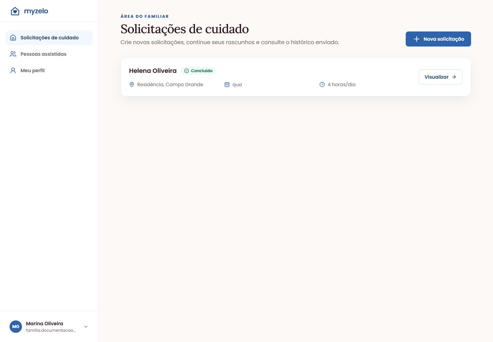

Histórico
Consultar solicitações e estados
Encontre solicitações anteriores e consulte os detalhes registrados no envio.
Abrir uma solicitação
- Abra Solicitações de cuidado.
- Localize o cartão pelo nome da pessoa assistida, local, dias e duração.
- Confira o estado e clique em Visualizar nas solicitações enviadas.
- Consulte os dados, o valor e a seção Andamento. Use Voltar às solicitações para retornar.


Entender os estados
| Estado no cartão | Significado e próxima ação |
|---|---|
| Rascunho | Ainda não enviado. Use Continuar para terminar ou Excluir para descartar. |
| Buscando profissional | Solicitação enviada e aguardando aceite de um profissional compatível. |
| Aguardando pagamento | Profissional reservado. Abra Visualizar e Simular pagamento antes de acabar o prazo. |
| Atendimento autorizado | Pagamento de teste autorizado. Aguarde o início. |
| Em atendimento | O profissional informou o início. Acompanhe os detalhes. |
| Aguardando confirmação | O profissional informou a conclusão. A família deve conferir e confirmar. |
| Concluído | A família confirmou a conclusão. O registro permanece para consulta. |
Dados preservados
A solicitação enviada guarda a pessoa assistida, o endereço e as condições registradas no momento do envio. Alterações futuras em cadastros não devem ser confundidas com uma edição de pedidos já enviados.

Resultado esperado
Você localiza um pedido e entende seu estado e os marcos do atendimento.
Regras que você precisa conhecer
- Rascunhos abrem em Continuar; pedidos enviados abrem em Visualizar.
- O envio encerra a edição do rascunho.
- Os estados dependem das ações da família e do profissional; atualizar a página não inicia um atendimento.